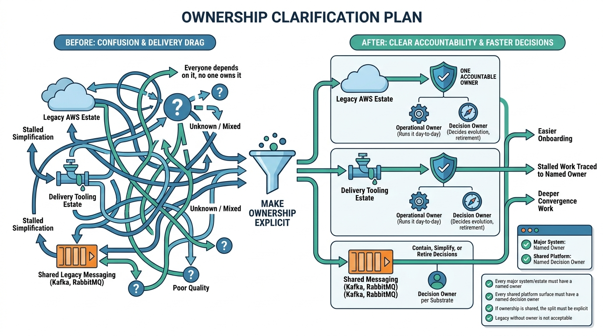

Blueprints and Convergence Plans
Ownership Clarification Plan: Named Owners for Estates, Platforms, and Legacy Surfaces

Image generated by Google Gemini (gemini-3-pro-image-preview)
Blueprints and Convergence Plans

Image generated by Google Gemini (gemini-3-pro-image-preview)